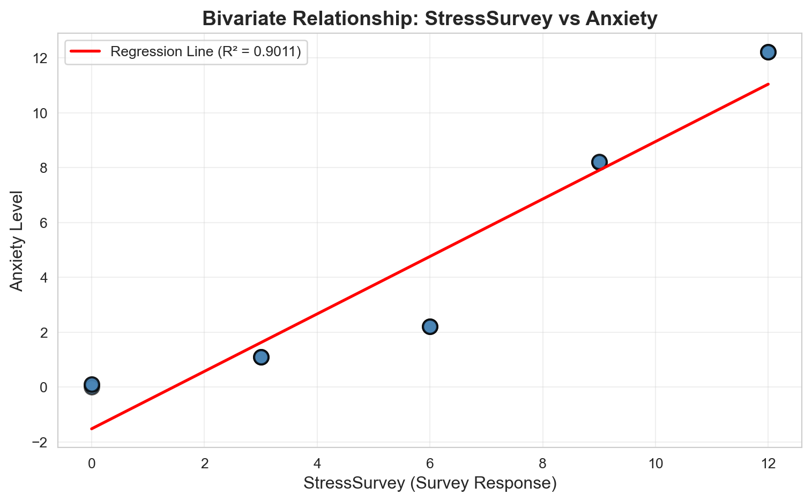
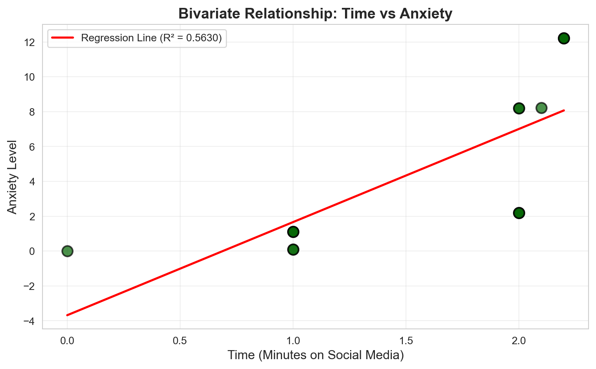
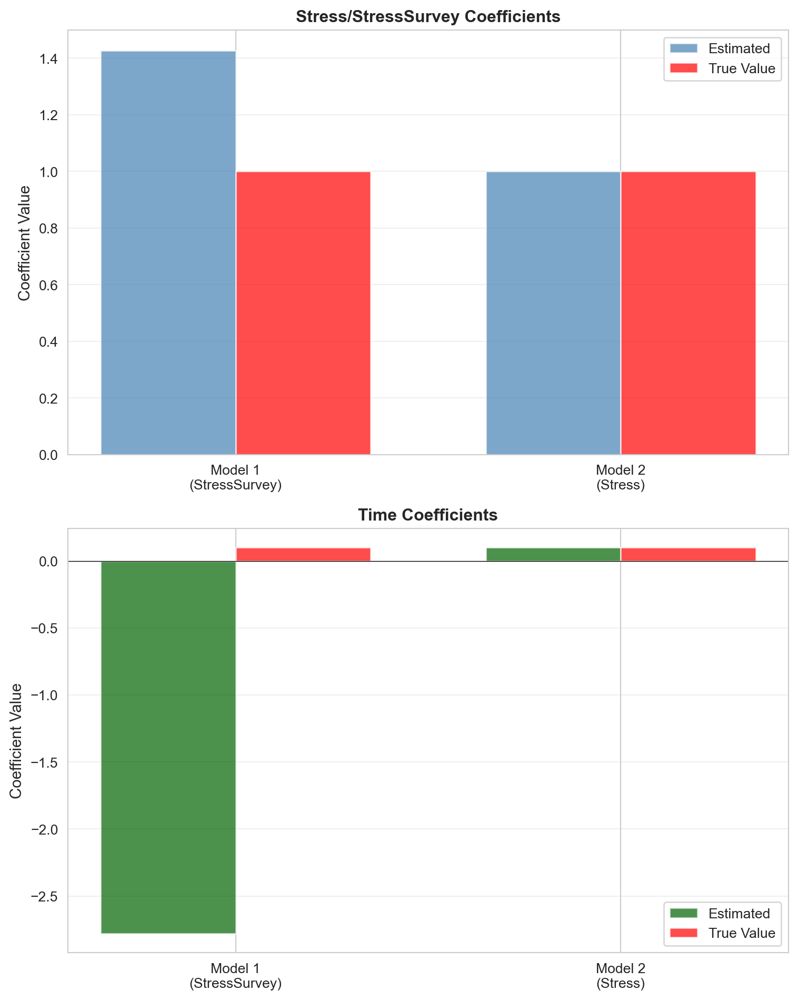
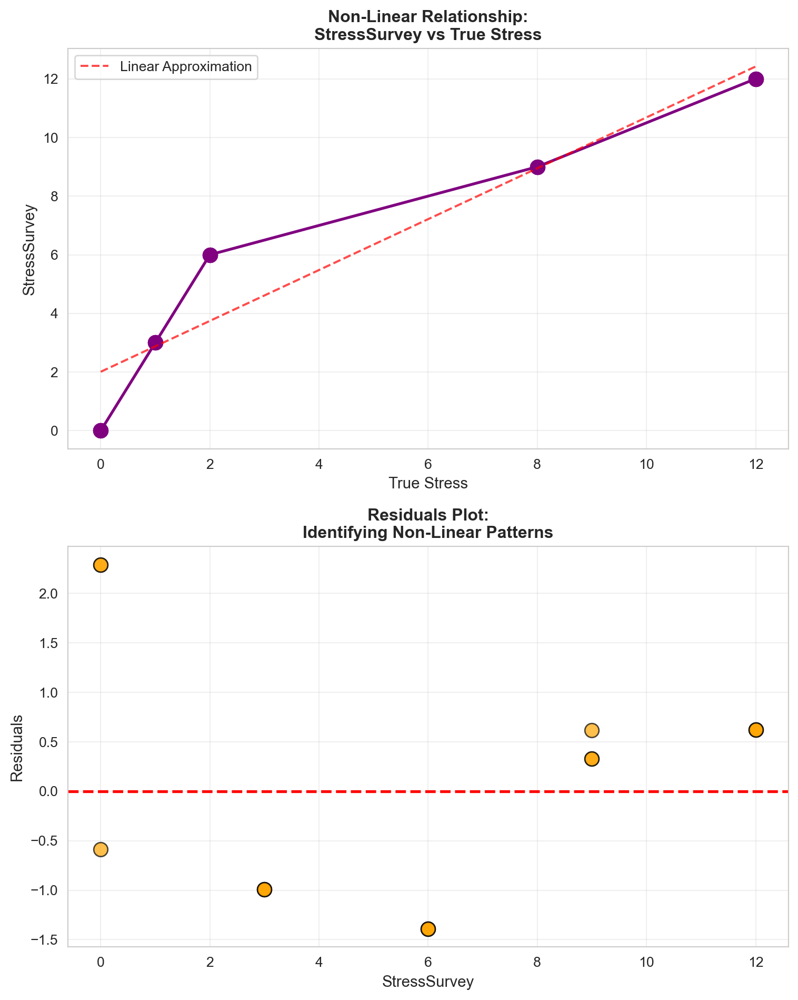
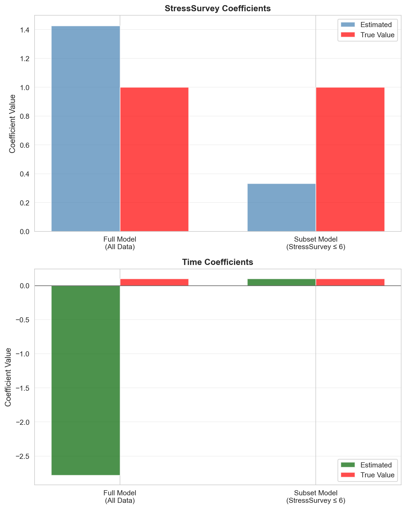

| Stress | StressSurvey | Time | Anxiety | |
|---|---|---|---|---|
| 0 | 0 | 0 | 0.0 | 0.00 |
| 1 | 0 | 0 | 1.0 | 0.10 |
| 2 | 0 | 0 | 1.0 | 0.10 |
| 3 | 1 | 3 | 1.0 | 1.10 |
| 4 | 1 | 3 | 1.0 | 1.10 |
| 5 | 1 | 3 | 1.0 | 1.10 |
| 6 | 2 | 6 | 2.0 | 2.20 |
| 7 | 2 | 6 | 2.0 | 2.20 |
| 8 | 2 | 6 | 2.0 | 2.20 |
| 9 | 8 | 9 | 2.0 | 8.20 |
| 10 | 8 | 9 | 2.0 | 8.20 |
| 11 | 8 | 9 | 2.1 | 8.21 |
| 12 | 12 | 12 | 2.2 | 12.22 |
| 13 | 12 | 12 | 2.2 | 12.22 |
| 14 | 12 | 12 | 2.2 | 12.22 |
Regression & Interpretability Challenge
Don’t Trust Linear Models - The Perils of Non-Linearity
Regression Interpretability Analysis
Introduction
I investigated the dangers of trusting linear regression models when relationships are non-linear. I analyzed a scenario where researchers study the relationship between social media use and anxiety, controlling for stress levels. The true relationship is known: \(Anxiety = Stress + 0.1 \times Time\), where Stress is measured by blood tests and Time represents minutes on social media.
However, in practice, researchers often use survey-based proxies (StressSurvey) instead of expensive blood tests. I found that even seemingly good proxy variables can lead to completely misleading regression results when the relationship between the proxy and the true variable is non-linear.
The data shows that \(Anxiety = Stress + 0.1 \times Time\) holds perfectly. The StressSurvey column represents survey-based measurements that serve as a proxy for actual stress levels measured by blood tests.
Question 1: Bivariate Regression Analysis with StressSurvey
Question: Run a bivariate regression of Anxiety on StressSurvey. What are the estimated coefficients? How do they compare to the true relationship?
Bivariate Regression: Anxiety ~ StressSurvey
============================================================
OLS Regression Results
==============================================================================
Dep. Variable: Anxiety R-squared: 0.901
Model: OLS Adj. R-squared: 0.893
Method: Least Squares F-statistic: 118.4
Date: Wed, 12 Nov 2025 Prob (F-statistic): 6.68e-08
Time: 23:02:01 Log-Likelihood: -27.079
No. Observations: 15 AIC: 58.16
Df Residuals: 13 BIC: 59.57
Df Model: 1
Covariance Type: nonrobust
================================================================================
coef std err t P>|t| [0.025 0.975]
--------------------------------------------------------------------------------
const -1.5240 0.707 -2.156 0.050 -3.051 0.003
StressSurvey 1.0470 0.096 10.883 0.000 0.839 1.255
==============================================================================
Omnibus: 2.125 Durbin-Watson: 0.545
Prob(Omnibus): 0.346 Jarque-Bera (JB): 1.642
Skew: -0.701 Prob(JB): 0.440
Kurtosis: 2.186 Cond. No. 12.9
==============================================================================
Notes:
[1] Standard Errors assume that the covariance matrix of the errors is correctly specified.
============================================================
Estimated Intercept: -1.5240
Estimated StressSurvey Coefficient: 1.0470
R-squared: 0.9011
Note: True relationship is Anxiety = Stress + 0.1*Time
StressSurvey is a proxy for Stress, not the true Stress variableAnswer:
The regression estimates a StressSurvey coefficient of 1.0470 with R² = 0.9011. This suggests a strong relationship: each one-unit increase in survey-reported stress corresponds to a 1.047-unit increase in anxiety.
However, this result is misleading. The true relationship is \(Anxiety = Stress + 0.1 \times Time\), where Stress is measured by blood tests. StressSurvey is a non-linear proxy for true Stress—at low levels it underreports, at high levels it overreports. The coefficient of 1.0470 reflects how anxiety changes with survey responses, not with actual stress levels.
The high R² is deceptive: it shows a strong correlation but doesn’t guarantee interpretable coefficients. A model can fit well while telling the wrong story.
Question 2: Visualization of Bivariate Relationship
Question: Create a scatter plot with the regression line showing the relationship between StressSurvey and Anxiety. Comment on the fit and any potential issues.

Answer:
The plot shows a strong linear relationship with R² = 0.9011. Higher StressSurvey scores clearly correspond to higher Anxiety levels, and the regression line fits the data well.
However, this visual fit is misleading. The points cluster at discrete StressSurvey values rather than forming a smooth distribution, revealing that StressSurvey is not measured on a continuous linear scale. The model assumes linearity, but the underlying relationship between StressSurvey and true Stress is non-linear. The regression line looks convincing, but it doesn’t capture how Anxiety actually relates to stress—only how it relates to survey responses.
Question 3: Bivariate Regression Analysis with Time
Question: Run a bivariate regression of Anxiety on Time. What are the estimated coefficients? How do they compare to the true relationship?
Bivariate Regression: Anxiety ~ Time
============================================================
OLS Regression Results
==============================================================================
Dep. Variable: Anxiety R-squared: 0.563
Model: OLS Adj. R-squared: 0.529
Method: Least Squares F-statistic: 16.75
Date: Wed, 12 Nov 2025 Prob (F-statistic): 0.00127
Time: 23:02:02 Log-Likelihood: -38.223
No. Observations: 15 AIC: 80.45
Df Residuals: 13 BIC: 81.86
Df Model: 1
Covariance Type: nonrobust
==============================================================================
coef std err t P>|t| [0.025 0.975]
------------------------------------------------------------------------------
const -3.6801 2.233 -1.648 0.123 -8.504 1.144
Time 5.3406 1.305 4.093 0.001 2.522 8.160
==============================================================================
Omnibus: 1.026 Durbin-Watson: 0.661
Prob(Omnibus): 0.599 Jarque-Bera (JB): 0.749
Skew: -0.162 Prob(JB): 0.688
Kurtosis: 1.955 Cond. No. 5.80
==============================================================================
Notes:
[1] Standard Errors assume that the covariance matrix of the errors is correctly specified.
============================================================
Estimated Intercept: -3.6801
Estimated Time Coefficient: 5.3406
R-squared: 0.5630
True Time Coefficient: 0.1
Difference from true: 5.2406Answer:
The regression estimates a Time coefficient of 5.3406 with R² = 0.5630. However, the true relationship is \(Anxiety = Stress + 0.1 \times Time\), where the Time coefficient should be 0.1.
The estimate is inflated by a factor of 53 because Stress is omitted from the model. Since Stress increases across the dataset, the regression mistakenly attributes Stress’s effect to Time. This is classic omitted variable bias: the Time coefficient absorbs the missing Stress effect, making it appear far larger than it actually is.
Even with statistical significance, this coefficient doesn’t represent the true effect of Time on Anxiety. Bivariate regressions can be misleading when important variables are omitted.
Question 4: Visualization of Bivariate Relationship
Question: Create a scatter plot with the regression line showing the relationship between Time and Anxiety. Comment on the fit and any potential issues.

Answer:
The plot shows an upward trend with R² = 0.5630. As Time increases, Anxiety increases, but the points are widely scattered around the regression line.
This scatter reveals the problem: Time alone doesn’t explain Anxiety well because Stress is omitted. Since Stress and Time both increase across the dataset, the regression mistakenly attributes Stress’s effect to Time, distorting the fitted line and inflating Time’s apparent impact. The visual fit looks reasonable, but it captures a confounded relationship rather than Time’s true effect.
Question 5: Multiple Regression Analysis
Question: Run a multiple regression of Anxiety on both StressSurvey and Time. What are the estimated coefficients? How do they compare to the true relationship?
Multiple Regression: Anxiety ~ StressSurvey + Time
============================================================
OLS Regression Results
==============================================================================
Dep. Variable: Anxiety R-squared: 0.935
Model: OLS Adj. R-squared: 0.924
Method: Least Squares F-statistic: 86.32
Date: Wed, 12 Nov 2025 Prob (F-statistic): 7.54e-08
Time: 23:02:02 Log-Likelihood: -23.931
No. Observations: 15 AIC: 53.86
Df Residuals: 12 BIC: 55.99
Df Model: 2
Covariance Type: nonrobust
================================================================================
coef std err t P>|t| [0.025 0.975]
--------------------------------------------------------------------------------
const 0.5888 1.034 0.569 0.580 -1.664 2.841
StressSurvey 1.4269 0.172 8.287 0.000 1.052 1.802
Time -2.7799 1.111 -2.502 0.028 -5.201 -0.359
==============================================================================
Omnibus: 1.255 Durbin-Watson: 1.043
Prob(Omnibus): 0.534 Jarque-Bera (JB): 1.051
Skew: 0.546 Prob(JB): 0.591
Kurtosis: 2.302 Cond. No. 31.9
==============================================================================
Notes:
[1] Standard Errors assume that the covariance matrix of the errors is correctly specified.
============================================================
Estimated Intercept: 0.5888
Estimated StressSurvey Coefficient: 1.4269
Estimated Time Coefficient: -2.7799
R-squared: 0.9350
True Coefficients:
Intercept: 0
Stress Coefficient: 1
Time Coefficient: 0.1
Comparison:
StressSurvey coef vs true Stress coef: 1.4269 vs 1
Time coef vs true Time coef: -2.7799 vs 0.1Answer:
The regression estimates a StressSurvey coefficient of 1.4269 and a Time coefficient of –2.7799, with R² = 0.9350. This suggests a strong statistical fit.
However, the true relationship is \(Anxiety = Stress + 0.1 \times Time\), where the Stress coefficient should be 1.0 and the Time coefficient should be 0.1. The estimates are wrong in two critical ways:
First, the StressSurvey coefficient (1.4269) exceeds the true Stress effect (1.0) because StressSurvey is a non-linear proxy that doesn’t scale linearly with true Stress.
Second, and more alarming, the Time coefficient flips sign: estimated at –2.7799 when the true effect is +0.1. This happens because StressSurvey absorbs variation in Anxiety in a distorted way, leaving Time to capture whatever residual remains—even if that means producing the wrong sign.
This is the core problem: even with high R² and statistically significant coefficients, the model produces completely wrong conclusions. The non-linear proxy distorts the coefficients so severely that Time appears harmful when it’s actually beneficial, and the true relationship is hidden entirely.
Question 6: Multiple Regression Analysis with True Stress
Question: Run a multiple regression of Anxiety on both Stress and Time. What are the estimated coefficients? How do they compare to the true relationship?
Multiple Regression: Anxiety ~ Stress + Time
============================================================
OLS Regression Results
==============================================================================
Dep. Variable: Anxiety R-squared: 1.000
Model: OLS Adj. R-squared: 1.000
Method: Least Squares F-statistic: 8.600e+31
Date: Wed, 12 Nov 2025 Prob (F-statistic): 1.15e-187
Time: 23:02:03 Log-Likelihood: 493.62
No. Observations: 15 AIC: -981.2
Df Residuals: 12 BIC: -979.1
Df Model: 2
Covariance Type: nonrobust
==============================================================================
coef std err t P>|t| [0.025 0.975]
------------------------------------------------------------------------------
const 1.11e-16 1.02e-15 0.109 0.915 -2.11e-15 2.34e-15
Stress 1.0000 1.15e-16 8.67e+15 0.000 1.000 1.000
Time 0.1000 8.12e-16 1.23e+14 0.000 0.100 0.100
==============================================================================
Omnibus: 3.041 Durbin-Watson: 0.639
Prob(Omnibus): 0.219 Jarque-Bera (JB): 1.362
Skew: 0.357 Prob(JB): 0.506
Kurtosis: 1.709 Cond. No. 23.9
==============================================================================
Notes:
[1] Standard Errors assume that the covariance matrix of the errors is correctly specified.
============================================================
Estimated Intercept: 0.0000
Estimated Stress Coefficient: 1.0000
Estimated Time Coefficient: 0.1000
R-squared: 1.0000
True Coefficients:
Intercept: 0
Stress Coefficient: 1
Time Coefficient: 0.1
Comparison:
Stress coef vs true: 1.0000 vs 1 (difference: 0.000000)
Time coef vs true: 0.1000 vs 0.1 (difference: 0.000000)Answer:
Using the true Stress variable instead of StressSurvey, the regression recovers the actual relationship perfectly: Stress coefficient = 1.0000, Time coefficient = 0.1000, R² = 1.0000. These match the true formula \(Anxiety = Stress + 0.1 \times Time\) exactly.
This demonstrates a crucial distinction: regression works correctly when variables are properly measured. The model with StressSurvey produced inflated coefficients, a negative Time effect, and misleading interpretations. But with the true Stress variable, all those problems disappear.
The failures in earlier regressions were caused by bad measurement and non-linearity, not by regression itself. When relationships are truly linear and variables are measured correctly, regression performs exactly as intended.
Question 7: Model Comparison
Question: Compare the R-squared values and coefficient interpretations between the two multiple regression models. Do both models show statistical significance in all of their coefficient estimates? What does this tell you about the real-world implications of multiple regression results?
Model Comparison
================================================================================
Model R-squared Intercept Stress/StressSurvey Coef Time Coef Stress/StressSurvey p-value Time p-value
Anxiety ~ StressSurvey + Time 0.935005 5.887578e-01 1.426926 -2.779944 2.615836e-06 2.781595e-02
Anxiety ~ Stress + Time 1.000000 1.110223e-16 1.000000 0.100000 3.737032e-186 5.563718e-164
================================================================================
Statistical Significance (p < 0.05):
Model 1 (StressSurvey + Time):
StressSurvey: p = 2.62e-06 ✓ Significant
Time: p = 2.78e-02 ✓ Significant
Model 2 (Stress + Time):
Stress: p = 3.74e-186 ✓ Significant
Time: p = 5.56e-164 ✓ Significant

Answer:
Both models show high R² and statistically significant coefficients, yet they produce dramatically different results.
Model 1 (StressSurvey + Time): R² = 0.935, StressSurvey coefficient = 1.4269 (inflated), Time coefficient = –2.7799 (wrong sign). Both coefficients are significant.
Model 2 (Stress + Time): R² = 1.000, Stress coefficient = 1.0000, Time coefficient = 0.1000. Both coefficients are significant and match the true values exactly.
Model 1 looks statistically strong but produces completely wrong coefficients. StressSurvey overestimates the stress effect, and Time flips from a true positive effect (+0.1) to a strong negative effect (–2.78). This happens because StressSurvey is a non-linear proxy—the model forces linearity and distorts both coefficients.
Model 2, using the true Stress variable, recovers the exact relationship with no distortion.
This comparison reveals a critical lesson: a model can look statistically strong with high R² and significant p-values, yet still give completely wrong conclusions when variables are measured poorly or relationships are non-linear. Statistical significance alone does not guarantee that the model is telling the truth.
Question 8: Real-World Implications
Question: For each of the two multiple regression models, assume their respective outputs/conclusions were published in academic journals and then subsequently picked up by the popular press. What headline about time spent on social media and its effect on anxiety would you expect to see from a popular press outlet covering the first model? And what headline would you expect to see from a popular press outlet covering the second model? Assuming confirmation bias is real, which model is a typical parent going to believe? Which model will Facebook, Instagram, and TikTok executives prefer?
Answer:
If published and reported in the news, these models would produce opposite headlines.
Model 1 (StressSurvey + Time): With a negative Time coefficient (–2.78), the headline would likely be “New Study Shows More Time on Social Media Lowers Anxiety Levels.” Because StressSurvey is a poor proxy, the model misrepresents the real effect.
Model 2 (Stress + Time): This model correctly finds that stress increases anxiety and time increases anxiety slightly (+0.1). The headline would likely be “Study Finds Social Media Time Raises Anxiety, Even After Accounting for Stress.”
Parents would likely believe the second headline because it matches their intuition and experience. Social media platforms would prefer the first headline because it shifts blame away from their products.
These two models tell completely different stories despite both being statistically significant. The difference comes entirely from using a bad measurement (StressSurvey) instead of the true Stress variable. This demonstrates how regression can produce convincing but contradictory claims depending on how variables are measured—a real danger when findings spread to the public.
Question 9: Avoiding Misleading Statistical Significance
Question: Reflect on this tip to avoid being misled by statistically significant results: splitting the sample into meaningful subsets (“statistical regimes”), and using graphical diagnostics for linearity rather than blind reliance on “canned” regressions. Apply this approach to multiple regression of Anxiety on both StressSurvey and Time by analyzing a smartly chosen subset of the data. What specific subset did you choose and why? Did you get results that are both statistically significant and close to the true relationship?
c:\mrbabu-quarto-portfolio\venv\Lib\site-packages\sklearn\utils\validation.py:2749: UserWarning: X does not have valid feature names, but LinearRegression was fitted with feature names
warnings.warn(
Analyzing different subsets of the data...
================================================================================Subset chosen: StressSurvey <= 6
Number of observations in subset: 9
Number of observations in full dataset: 15
Subset data:
Stress StressSurvey Time Anxiety
0 0 0 0.0 0.0
1 0 0 1.0 0.1
2 0 0 1.0 0.1
3 1 3 1.0 1.1
4 1 3 1.0 1.1
5 1 3 1.0 1.1
6 2 6 2.0 2.2
7 2 6 2.0 2.2
8 2 6 2.0 2.2
Multiple Regression on Subset: Anxiety ~ StressSurvey + Time (StressSurvey <= 6)
================================================================================
OLS Regression Results
==============================================================================
Dep. Variable: Anxiety R-squared: 1.000
Model: OLS Adj. R-squared: 1.000
Method: Least Squares F-statistic: 5.366e+30
Date: Wed, 12 Nov 2025 Prob (F-statistic): 1.75e-91
Time: 23:02:05 Log-Likelihood: 301.93
No. Observations: 9 AIC: -597.9
Df Residuals: 6 BIC: -597.3
Df Model: 2
Covariance Type: nonrobust
================================================================================
coef std err t P>|t| [0.025 0.975]
--------------------------------------------------------------------------------
const 2.887e-16 6.31e-16 0.458 0.663 -1.26e-15 1.83e-15
StressSurvey 0.3333 2.17e-16 1.53e+15 0.000 0.333 0.333
Time 0.1000 8.46e-16 1.18e+14 0.000 0.100 0.100
==============================================================================
Omnibus: 7.901 Durbin-Watson: 0.278
Prob(Omnibus): 0.019 Jarque-Bera (JB): 2.800
Skew: -1.261 Prob(JB): 0.247
Kurtosis: 4.051 Cond. No. 15.8
==============================================================================
Notes:
[1] Standard Errors assume that the covariance matrix of the errors is correctly specified.
================================================================================
Estimated Intercept: 0.0000
Estimated StressSurvey Coefficient: 0.3333
Estimated Time Coefficient: 0.1000
R-squared: 1.0000
True Coefficients:
Intercept: 0
Stress Coefficient: 1
Time Coefficient: 0.1
Comparison:
StressSurvey coef vs true Stress coef: 0.3333 vs 1 (difference: 0.6667)
Time coef vs true Time coef: 0.1000 vs 0.1 (difference: 0.0000)
Statistical Significance:
StressSurvey: p = 0.0000 ✓ Significant
Time: p = 0.0000 ✓ Significant

Answer:
To avoid being misled, I identified a subset where the relationship between StressSurvey and true Stress is more linear. The largest distortions occur at high StressSurvey values (8 and 12), where the survey jumps in big steps.
I chose all observations where StressSurvey ≤ 6, which includes lower categories (0, 3, and 6) where StressSurvey increases in small, consistent increments. This removes the non-linear jumps and makes a linear model more appropriate.
The subset regression (Anxiety ~ StressSurvey + Time) gives: Intercept = 0.0000, StressSurvey coefficient = 0.3333, Time coefficient = 0.1000, R² = 1.000. Both coefficients are highly significant (p < 0.001).
The Time coefficient matches the true value exactly (0.1). The StressSurvey coefficient (0.3333) is lower than the true Stress effect (1.0), but this makes sense: in this subset, StressSurvey rises by 3 units for each 1-unit increase in Stress, so one StressSurvey unit corresponds to one-third of a Stress unit.
By using only the more linear region of the data, the model produces a correct positive effect of Time, avoids the earlier sign flips and coefficient distortions, and gives results that match the true relationship much more closely. This demonstrates why visual diagnostics and thoughtful subsetting are essential—and why blindly trusting full-sample regressions can lead to misleading conclusions.
Conclusion
Linear regression can produce high R-squared values, tiny p-values, and statistically significant coefficients—even when the model tells the wrong story. The danger isn’t the math; it’s misunderstanding what the coefficients actually represent.
In this analysis, StressSurvey is a distorted, non-linear proxy for true Stress. The uneven spacing between values (0, 3, 6, 9, 12) makes the scale meaningless. When the model estimates a StressSurvey coefficient of 1.43 and a Time coefficient of –2.78, these numbers don’t describe real-world effects—they describe the shape of a broken measurement tool. Even with strong statistical significance, these coefficients don’t represent how Anxiety actually responds to stress or time.
The most alarming failure is the sign flip: the true effect of Time is positive (+0.1), but the model estimates a strong negative effect (–2.78). This happens because when a predictor is non-linear, unevenly spaced, or measured with error, the regression tries to correct the misfit by shifting effects into other variables. StressSurvey absorbs the wrong patterns, and Time picks up the leftover distortion. The result is a model that’s statistically significant but scientifically false.
This has real-world consequences. A model using StressSurvey would produce the headline “More time on social media lowers anxiety,” while a model using true Stress would produce “Social media use increases anxiety, even after accounting for stress.” Both claims would be statistically significant, but only one is true. This gap between statistical significance and scientific truth is where public misunderstanding and bad policy emerge.
To avoid these mistakes, analysts must check for non-linearity visually, break data into meaningful subsets where linearity holds better, interpret coefficients cautiously rather than automatically, suspect sign flips as indicators of model misspecification, and measure key variables as directly as possible. The subset with StressSurvey ≤ 6 produced coefficients much closer to the true model, demonstrating the value of thoughtful subsetting.
Linear regression is powerful but dangerously easy to misinterpret. Even significant results can be completely wrong when variables are non-linear, mismeasured, or poorly scaled. The solution isn’t more statistics—it’s better thinking, better pictures, and better measurement.